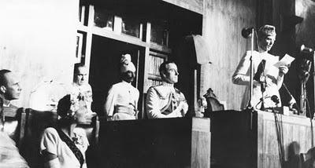

Mr. President (Quaid-e-Azam Mohammad Ali Jinnah):
Ladies and Gentlemen, I cordially thank you, with the utmost sincerity, for the honour you have conferred upon me — the greatest honour that it is possible for this Sovereign Assembly to confer — by electing me as your first President. I also thank those leaders who have spoken in appreciation of my services and their personal references to me. I sincerely hope that with your support and your co-operation we shall make this Constituent Assembly an example to the world. The Constituent Assembly has got two main functions to perform. The first is the very onerous and responsible task of framing our future constitution of Pakistan and the second of functioning as a full and complete Sovereign body as the Federal Legislature of Pakistan. We have to do the best we can in adopting a provisional constitution for the Federal Legislature of Pakistan. You know really that not only we ourselves are wondering but, I think, the whole world is wondering at this unprecedented cyclonic revolution which has brought about the plan of creating and establishing two independent Sovereign Dominions in this sub-continent. As it is, it has been unprecedented; there is no parallel in the history of the world. This mighty sub-continent with all kinds of inhabitants has been brought under a plan which is titanic, unknown, unparalleled. And what is very important with regards to it is that we have achieved it peacefully and by means of a revolution of the greatest possible character.
Dealing with our first function in this Assembly, I cannot make any well-considered pronouncement at this moment, but I shall say a few things as they occur to me. The first and the foremost thing that I would like to emphasise is this — remember that you are now a Sovereign legislative body and you have got all the powers. It, therefore, places on you the gravest responsibility as to how you should take your decisions. The first observation that I would like to make is this. You will no doubt agree with me that the first duty of a Government is to maintain law and order, so that the life, property and religious beliefs of its subjects are fully protected by the State.
The second thing that occurs to me is this. One of the biggest curses from which India is suffering... is bribery and corruption. (Hear, hear.) That really is a poison. We must put that down with an iron hand and I hope that you will take adequate measures as soon as it is possible for this Assembly to do so.
Black-marketing is another curse. Well, I know that black-marketers are frequently caught and punished. According to our judicial notions sentences are passed, and sometimes fines only are imposed. Now you have to tackle this monster which today is a colossal crime against society, in our distressed conditions, when we constantly face shortage of food and or the essential commodities of life. A citizen who does black-marketing commits, I think, a greater crime than the biggest and most grievous of crimes. These black-marketers are really knowing, intelligent and ordinarily responsible people, and when they indulge in black-marketing, I think they ought to be very severely punished, because they undermine the entire system of control and regulation of food-stuffs and essential commodities, and cause wholesale starvation and want and even death.
The next thing that strikes me is this. Here again is a legacy which has been passed on to us. Along with many other things good and bad, has arrived this great evil -the evil of nepotism and jobbery. This evil must be crushed relentlessly. I want to make it quite clear that I shall never tolerate any kind of jobbery, nepotism or any influence directly or indirectly brought to bear upon me. Wherever I find that such a practice is in vogue, or is continuing anywhere, low or high, I shall certainly not countenance it.
I know there are people who do not quite agree with the division of Indian and the partition of the Punjab and Bengal. Much has been said against it, but now that it has been accepted, it is the duty of every one of us to loyally abide by it and honourably act according to the agreement which is now final and binding on all. But you must remember, as I have said, that this mighty revolution that has taken place is unprecedented. One can quite understand the feeling that exists between the two communities wherever one community is in majority and the other is in minority. But the question is whether it was possible or practicable to act otherwise than has been done. A division had to take place. On both sides, in Hindustan and Pakistan, there are sections of people who may not agree with it, who may not like it, but in my judgment there was no other solution and I am sure future history will record its verdict in favour of it. And what is more it will be proved by actual experience as we go on that that was the only solution of India’s constitutional problem. Any idea of a United India could never have worked and in my judgment it would have led us to terrific disaster. May be that view is correct; may be it is not; that remains to be seen. All the same, in this division it was impossible to avoid the questions of minorities being in one Dominion or the other. Now that was unavoidable. There is no other solution. Now what shall we do? Now, if we want to make this great State of Pakistan happy and prosperous we should wholly and solely concentrate on the well-being of the people, and especially of the masses and the poor. If you will work in co-operation, forgetting the past, burying the hatchet, you are bound to succeed. If you change your past and work together in a spirit that every one of you, no matter to what community he belongs, no matter what relations he had with you in the past, no matter what is his colour, caste or creed, is first, second and last a citizen of this State with equal rights, privileges and obligations there will be no end to the progress you will make.
I cannot emphasise it too much. We should begin to work in that spirit and in course of time all these angularities of the majority and minority communities... will vanish. Indeed if you ask me this has been the biggest hindrance in the way of India to attain its freedom and independence and but for this we would have been free peoples long long ago. No power can hold another nation, and specially a nation of 400 millions souls in subjection; no body could have conquered you, and even if it had happened, no body could have continued its hold on you for any length of time but for this. (Applause.) Therefore we must learn a lesson from this. You are free; you are free to go to your temples, you are free to go to your mosques or to any other places of worship in this State of Pakistan. You may belong to any religion or caste or creed — that has nothing to do with the business of the State (Hear, hear). As you know, history shows that in England conditions some time ago were much worse than those prevailing in India to-day. The Roman Catholics and the Protestants persecuted each other. Even now there are some States in existence where there are discriminations made and bars imposed against a particular class. Thank God we are not starting in those days. We are starting in the days when there is no discrimination, no distinction between one community and another, no discrimination between one caste or creed and another. We are starting with this fundamental principle that we are all citizens and equal citizens of one State. (Loud applause.) The people of England in course of time had to face the realities of the situation and had to discharge the responsibilities and burdens placed upon them by the government of their country and they went through that fire step by step. Today you might say with justice that Roman Catholics and Protestants do not exist: what exists now is that every man is a citizen, an equal citizen, of Great Britain and they are all members of the nation.
Now, I think we should keep that in front of us as our ideal and you will find that in course of time Hindus would cease to be Hindus and Muslims would cease to be Muslims, not in the religious sense, because that is the personal faith of each individual, but in the political sense as citizens of the State.
Well, gentlemen, I do not wish to take up any more of your time and thank you again for the honour you have done to me. I shall always be guided by the principles of justice and fair-play without any... prejudice or ill-will, in other words partiality or favouritism. My guiding principle will be justice and complete impartiality, and I am sure that with your support and co-operation, I can look forward to Pakistan becoming one of the greatest Nations of the world. (Loud applause)